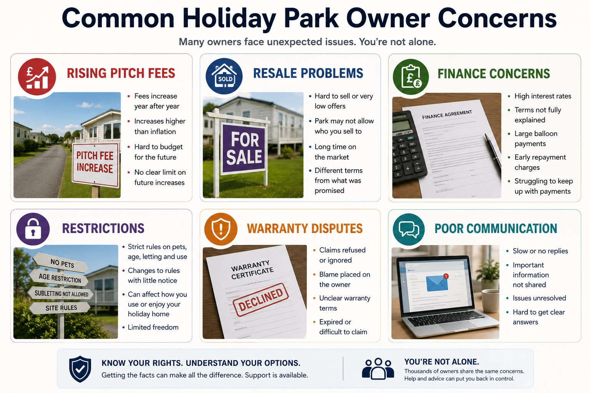

Plain-English summary: Finance can make a holiday park purchase more complex. Concerns may involve affordability, monthly payments, total cost, commission, part-exchange, sales promises or a problem with the caravan itself.
This is an informational guide. The main review page remains Holiday Park and Static Caravan Review if you want Quaerens to look at your documents and circumstances.
Key issues and warning signs
- Finance used to purchase a caravan or lodge
- Affordability and monthly cost concerns
- Deposit or part-exchange arrangements
- Interest, commission or total amount repayable
- Linked issues with the underlying purchase
- Early settlement or exit concerns

Detailed explanation
Not every caravan finance agreement is regulated in the same way. The type of agreement, parties involved, payment method and contract wording all matter.
A review should bring together the sales paperwork and finance paperwork. Monthly affordability may have been discussed alongside rental income, site fees or future resale expectations.
Where a credit card or linked finance route may be relevant, the payment structure, contract value and evidence need to be checked carefully before any conclusion is reached.
These issues often overlap with broader holiday park dispute review concerns, but this guide focuses on the specific topic so it does not duplicate the main commercial page.
Common examples
Example 1
A buyer agreed finance after being told rental income would cover payments, but later income and fees did not match that explanation.
Example 2
A buyer did not understand the total amount repayable or how part-exchange affected the finance position.
These are illustrative fact patterns only. They do not describe guaranteed outcomes or imply that every similar case has a valid complaint.
Evidence checklist
Having these documents available can make the review clearer. You do not need every document before contacting us.
- Finance agreement
- Pre-contract information
- Affordability documents
- Deposit and part-exchange paperwork
- Sales brochures and income projections
- Payment statements
- Credit-card evidence if relevant
- Complaint replies
Practical steps you can take
- Keep the full finance agreement, not just the first page.
- Create a list of payments made and current balance.
- Separate finance complaints from condition or site-fee complaints.
- Keep sales promises about affordability or income.
- Check whether a final response has been issued.
What may weaken the position?
- Only having screenshots of payments but no agreement
- Assuming every finance agreement has the same complaint route
- No evidence of affordability discussions
- Ignoring limitation or complaint deadlines
What Quaerens can review
Quaerens can review the finance documents, sales evidence, payment history and linked purchase issues to help identify what complaint or recovery routes may warrant further review.
What Happens Next?
Submit your summary
You submit a summary of the issue and any documents already available.
We review the evidence
We review the purchase, contract, correspondence and evidence.
We discuss gaps
We contact you to discuss the circumstances and any information gaps.
We explain routes
We explain the complaint or support routes that may be worth considering based on the available information.
Frequently asked questions
Can I complain about caravan finance?
Possibly, depending on the agreement, sales process, affordability evidence and whether the issue is connected to the underlying purchase.
Does Section 75 apply?
It may be worth considering only in qualifying circumstances. The payment structure, contract value and parties involved need careful review.
What documents should I keep?
Keep the finance agreement, pre-contract information, payment statements, sales documents, income projections and complaint replies.
Can commission concerns be relevant?
They may be relevant in some finance scenarios, but the facts and agreement type need to be reviewed before drawing conclusions.
Can I stop paying finance?
Be careful. Stopping payments can affect arrears and credit position. Organise the evidence and seek appropriate advice before acting.
Does Quaerens guarantee compensation?
No. Quaerens can help organise evidence and identify possible routes, but outcomes are not guaranteed.
Related guides
Holiday Park Misrepresentation
Plain-English guidance on holiday park misrepresentation, static caravan sales promises, income claims, resale value, site fees and evidence to keep.
Holiday Park Site Fee Disputes
Practical guidance on holiday park site fee disputes, pitch fees, service charges, utility costs, fee increases, arrears and evidence to keep.
Holiday Park Exit Problems
Guidance on holiday park exit problems, notice requirements, removal costs, resale restrictions, buyback concerns and evidence to review before leaving.
Holiday Lodge Purchase Disputes
Guidance on holiday lodge purchase disputes, sales promises, occupancy restrictions, finance, defects, delayed handover, resale and exit evidence.
Holiday Park Knowledge Hub
Browse the full set of static caravan and holiday lodge guidance.
Main Holiday Park Review
Use the main page for a full document and circumstances review.
Request My Free Holiday Park Review
Send a short summary of what happened and the documents you have. Quaerens will explain whether structured review support appears appropriate.
Request My Free Holiday Park ReviewImportant note
This guide is general information for document organisation and complaint preparation. It does not promise compensation, a refund, contract cancellation or any specific outcome. The available routes depend on the agreement, evidence, dates, parties involved and individual circumstances.